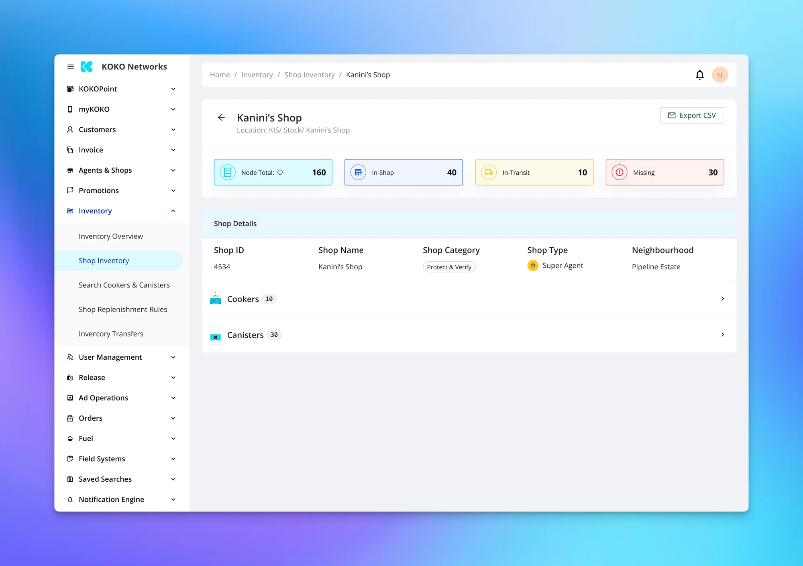
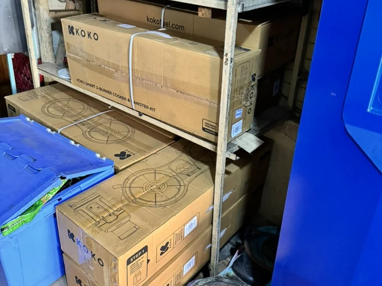
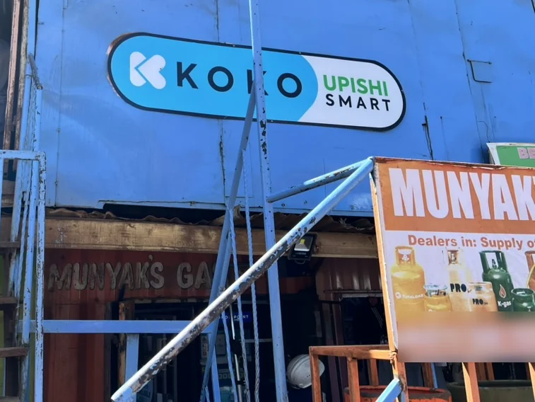
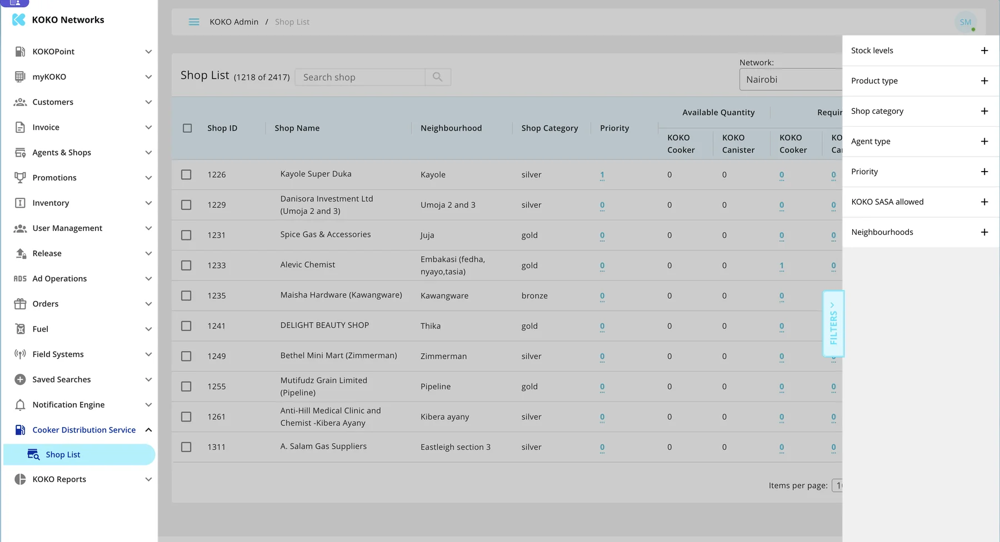
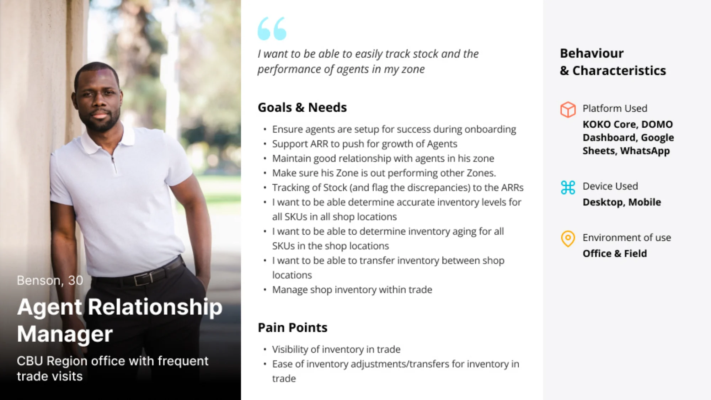
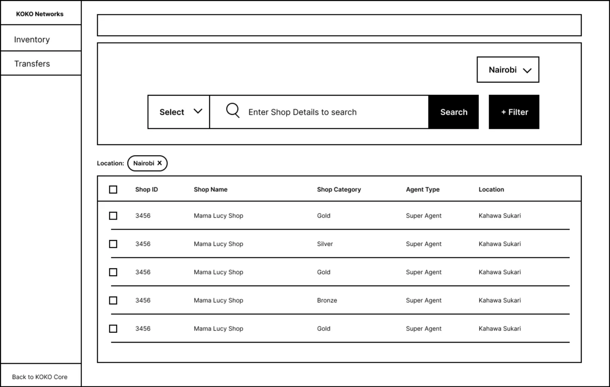
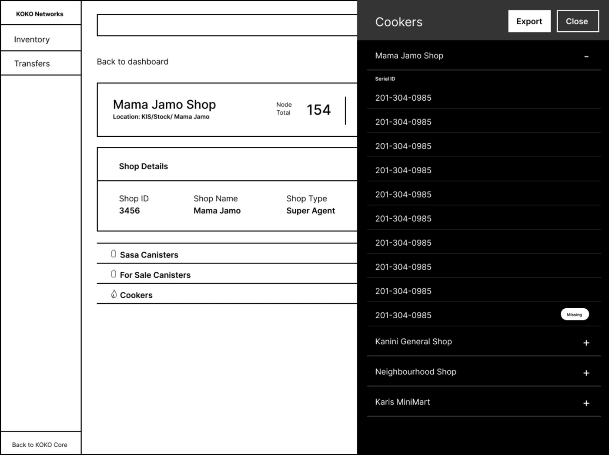
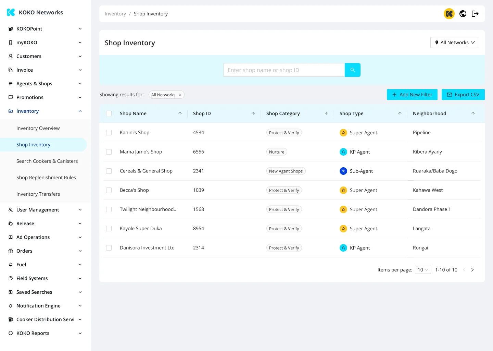
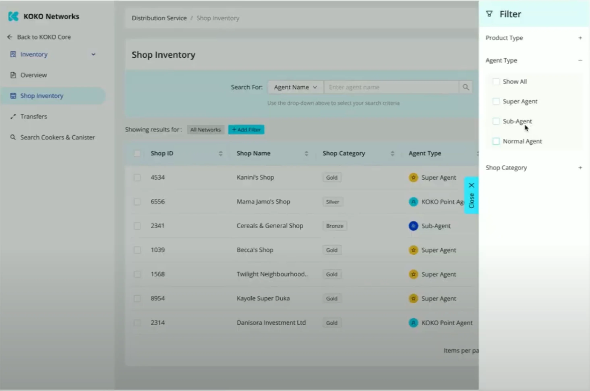
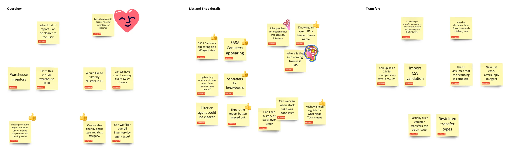

Inventory Management Redesign
The tool had the data. It just didn't match how anyone actually worked.

The tool had the data. It just didn't match how anyone actually worked.

KOKO Networks, a clean energy company, runs a high-volume retail operation, with stock moving daily across a network of agent shops and warehouses. The operations team had an inventory management tool that tracked everything. On paper, it worked.


In practice, it was slowing everyone down.
Stock levels were hard to trust. Simple questions like what we have, where it is and what's missing needed manual checks or an analyst. Teams spent more time reconciling data than making decisions. And as the network scaled, these inefficiencies became directly expensive: missed stock, delayed replenishment, and growing friction between field agents and central teams.
The system was built around how inventory was stored in the database, not how operations teams actually thought about stock. The result:
Critical actions were buried behind dense navigation. Teams couldn't discover key insights without guidance. The interface assumed familiarity that new team members didn't have. High-frequency tasks carried unnecessary cognitive load.

The tool had the features. People couldn't find their way to them.
I was brought in to figure out why an essential tool was creating friction despite having the right data underneath. My work sat between product, UX and operations. I interviewed internal users, mapping actual decision workflows, and identifying where the system's structure diverged from how people actually worked.

The focus was deliberately narrow: surface the information and actions that mattered most in daily workflows, reduce cognitive load on high-frequency tasks, and make the tool usable without training or hand-holding.


Clarity over configurability. Instead of exposing everything the system could do, I reshaped the experience around what teams needed to see and act on daily. Features that were technically powerful but rarely used were de-emphasized. High-impact workflows were surfaced and simplified.

Opinionated views over flexible ones. This meant saying no to configurability that added complexity, and yes to default views that helped teams act faster. Not every user wanted the same thing, but every user needed to answer the same core questions quickly.


Surface exceptions early. Rather than making teams hunt for problems, the redesign brought low stock, mismatches and pending actions to the surface where they could be caught before they became operational failures.
I tested the prototype with three operations staff. Most of their feedback asked for more ways to filter, by cluster, agent type and shop category, rather than a different layout. That told me the structure held up and the remaining gaps were in finding specific shops.

Testing an AI growth coach with small business owners, and finding three launch blockers before any customer did.
424 leads in 14 days against a target of 200
View case study
Adding bank transfers for Nigerian merchants who didn't trust card payments.
90% payment success, 200+ merchants in 30 days
View case study
Replacing four separate onboarding tools with one KYC system across four countries.
Verification time cut from a week to 24 hours
View case study